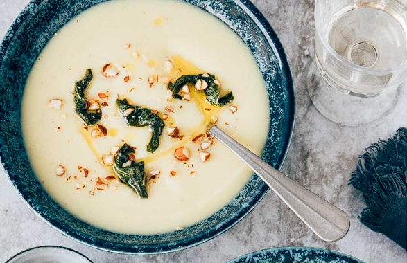

Pastinaaksoep
Aan de soep hebben we wat room toegevoegd en we garneren hem met een eigengemaakte salieboter.
Een echte romige pastinaaksoep dus!
Ingrediënten
- 500 gr pastinaak
- 1teentje knoflook
- 1 ui
- 750 ml (kippen) bouillon
- 100 ml kookroom
- 1 takje rozemijn
- peper en zout
- Olijfolie
- 100 gr roomboter
- 60 gr amandelen
- 2 takjes verse salie
Bereidingsweize
- Pel en snipper de ui en hak de knoflook fijn.
Fruit dit aan in wat olijfolie in een soeppan.
Rits de blaadjes van de rozemarijn en bak deze mee.
- Verwijder met een dunschiller de buitenste laag van de pastinaak.
Verwijder het kontje en snijd de pastinaak in stukken van ongeveer drie cm.
Voeg het bij de pan en bak ze kort mee.
- Voeg vervolgens de bouillon toe en breng het mengsel aan de kook.
Laat de soep zo’n 15 minuten koken, totdat de pastinaak gaar is.
Pureer de soep glad met een staafmixer en voeg een scheutje room toe voor wat extra smaak.
Breng de soep op smaak met peper en zout.
- Rooster de amandelen kort in een droge koekenpan en hak ze grof.
Laat de boter in een steelpannetje zachtjes smelten.
Voeg de salieblaadjes toe, deze worden zo lekker krokant.
Zorg ervoor dat de boter niet bruin kleurt. De boter zal de smaak van de salie opnemen.
- Presenteer de soep in een mooie kom.
Voeg wat gehakte amandelen toe en maak de pastinaaksoep af met een lepeltje salieboter.

Tip Gezonde soep! Goed voor je gezondheid!